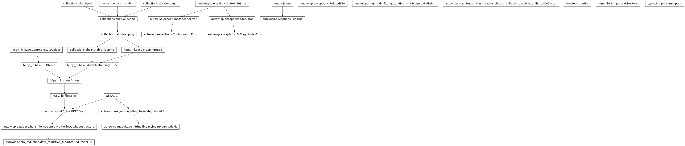

autowisp.magnitude_fitting.iterative_refit module
Class Inheritance Diagram

Interface for performing iterative magnitude fitting.
- class autowisp.magnitude_fitting.iterative_refit.MagnitudeFitting(configuration, *, start_status, mark_start, mark_end)[source]
Bases:
objectMagnitude fitting of one batch of DR files.
With an existing master photometric reference configured, every image is fit once against it. Otherwise the images are fit and the master re-derived from them, pass after pass, until it converges; images on the exclusion list are fit too, but kept out of the masters.
- Variables:
sphotref_header (fits.Header) – The header of the single photometric reference.
- __call__(dr_fnames, catalog_sources)[source]
Fit the given DR files.
- Parameters:
dr_fnames ([str]) – The DR files to fit.
catalog_sources (pandas.DataFrame) – The catalog to use as extra information in magnitude fitting terms and for excluding sources from the fit.
- Returns:
The new masters to record, as for
ImageProcessingManager.add_masters(), or None when fitting against an existing master, which creates none.- Return type:
[dict] or None
- __init__(configuration, *, start_status, mark_start, mark_end)[source]
Get ready to fit a batch of DR files.
- Parameters:
configuration (dict) – The configuration of the fit_magnitudes step.
start_status (int or None) – The status an interrupted run left the batch at, or None to start from scratch.
mark_start (callable) – Called at the start of fitting each DR file.
mark_end (callable) – Called after each DR file has been fit.
- _converged(old_reference, new_reference)[source]
True iff the references agree within
max_photref_change.
- _fit_pass(dr_fnames, photref, magfit_stat_collector=None)[source]
Fit the given DR files once, against the given reference.
- _next_reference(magfit_stat_collector, old_reference, master_inputs)[source]
Return the reference for the next pass, or None if this pass was last.
The master built from the pass just completed is saved only if another pass is fit against it: once it agrees with the reference that pass used, or the iterations run out, that reference is final and the new master, used for nothing, is discarded. A pass against the single photometric reference is never the last, so the final master is always one that images were fit against.
- Parameters:
magfit_stat_collector (MasterPhotrefCollector) – The object used by the magnitude fitting processes to generate the magnitude fitting statistics.
old_reference (dict) – The photometric reference used for the last magnitude fitting iteration.
master_inputs – See _refit().
- Returns:
- The reference to fit the next pass against, or None if there
is no next pass.
- str or None:
The file the returned reference was saved to, or None if there is no next pass.
- Return type:
dict or None
- _refit(fit_dr_fnames, excluded_dr_fnames, master_inputs)[source]
Fit and re-derive the master photometric reference until it converges.
- Parameters:
fit_dr_fnames ([str]) – The DR files to fit and build the masters from.
excluded_dr_fnames ([str]) – DR files to fit but leave out of the masters. They are fit only once, against the reference of the last pass, which gives them exactly the fit they would get in that pass. Each pass still marks their progress along with the rest, so an interrupted run leaves the whole batch at one status.
master_inputs – What the masters are built with:
catalog,headerandextra_hdusattributes, see MasterPhotrefCollector.generate_master().
- Returns:
- The filename of the master photometric reference the last pass
was fit against, or None if every pass was against the single photometric reference.
- str:
The filename of the statistics of the last pass.
- Return type:
str or None
- _refuse_clash()[source]
Raise if a file this pass would write exists already.
Only the pass itself writes its files, and cleaning up an interrupted run deletes the partial ones, so a file there can only belong to another master: one built from a single photometric reference the file name formats do not tell apart from this one, or one built earlier from this reference. Either way it is not overwritten.
- autowisp.magnitude_fitting.iterative_refit._get_common_header(fit_dr_filenames)[source]
Return header containing all keywords common to all input frames.
- autowisp.magnitude_fitting.iterative_refit._get_population_record(exclusion_rule, dr_filenames, excluded_dr_filenames)[source]
Return the header keywords and table recording what masters are built from.
- Parameters:
exclusion_rule (str) – The rule that decided the exclusions, empty if they were not decided by a rule.
dr_filenames ([str]) – Every DR file fit while the masters are built, excluded ones included, as given to magnitude fitting.
excluded_dr_filenames ([str]) – The DR files among
dr_filenamesfit but left out of the masters.
- Returns:
- The
QCRULE,QCNIMGandQCNEXCLheader keywords, as (value, comment)tuples.- fits.BinTableHDU:
The
INMASTERtable listing every DR file fit, with anincludedcolumn flagging those the masters are built from.
- The
- Return type:
related_filesclassifier for a magnitude-fit work item.The item is the DR file being fit; the batch is fit against the single photometric reference (and, once it exists, the master photometric reference). Module-level so a
partialbinding the references is picklable to the workers.